YouTube mi žere čas, ale má to i svoje výhody 🙂
Poslední dobou jsem hodně řešil růst svého ARPG-oriented YouTube kanálu a cestu k 10k odběratelům. Vyšlo hodně updateů do mých oblíbených her jako Diablo IV, Path of Exile, Grim Dawn nebo Last Epoch. Možná to nezní jako něco, co by pomáhalo game devu, ale ve skutečnosti ano.
Dlouhodobě bojuju s repetitivností klasických RPG a s jejich limity. Chtěl jsem hráčům dát něco navíc, aby u mého RPG vydrželi déle. Proto jsem se rozhodl přidat několik mechanik inspirovaných mými oblíbenými ARPG.
I když mám o něco méně času, využil jsem ho aspoň na doladění modelů, počasí a celkové atmosféry. Mrkni na některé z posledních novinek a připrav se na další blog post o generování dungeonů, který chci vydat brzy.
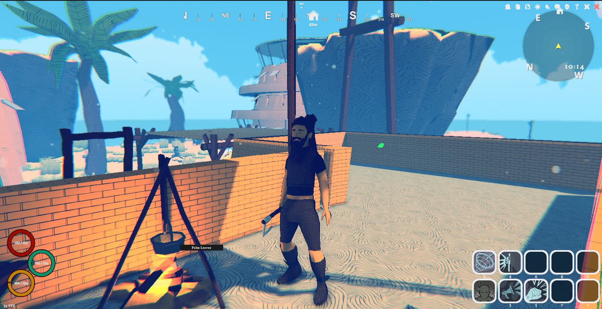
Ďábel je v detailech
Když mluvím o pocitu ze hry, nejsou to jen barvy, počasí a světlo. Hodně dělají i detaily v interiérech a jejich interaktivita. Tady je pár novějších přírůstků.
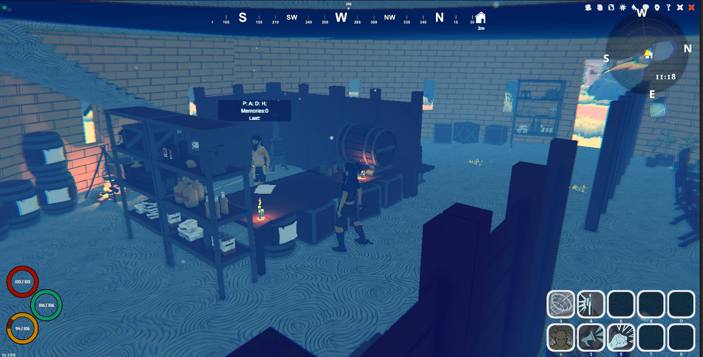
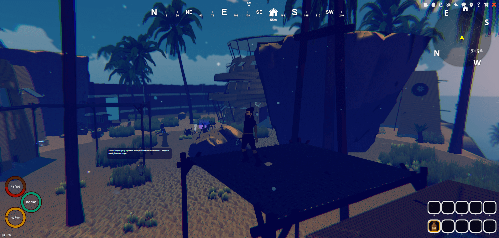
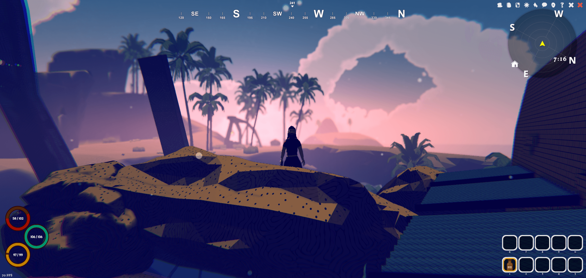
NPC jsou teď také interaktivnější.
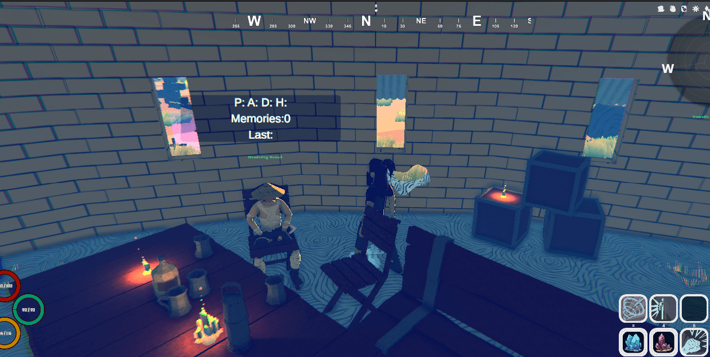
Nový typ nepřítele “kanibalové” ukážu brzy detailněji. Zatím mrkni na jejich vesnici.
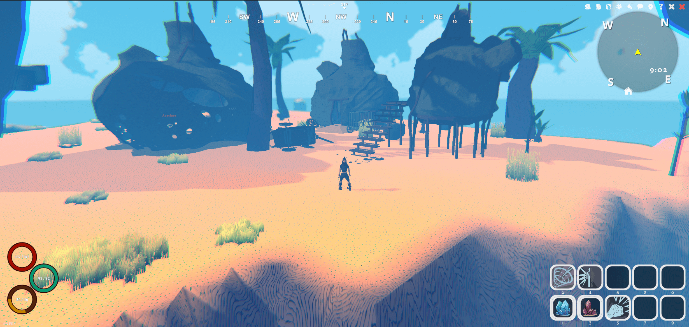
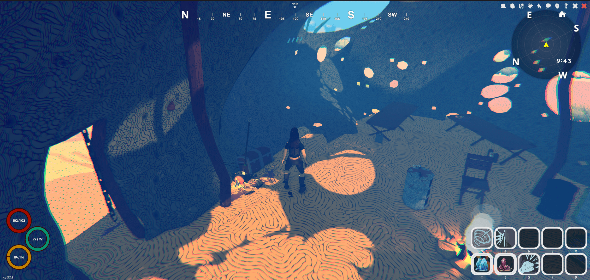
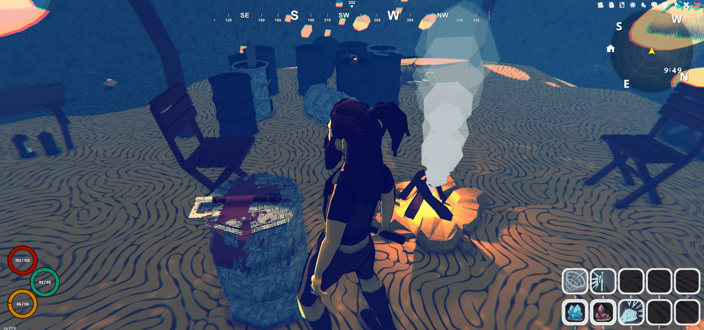
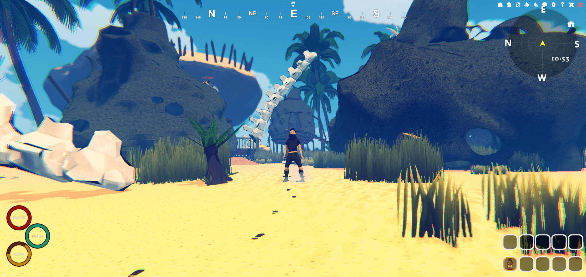
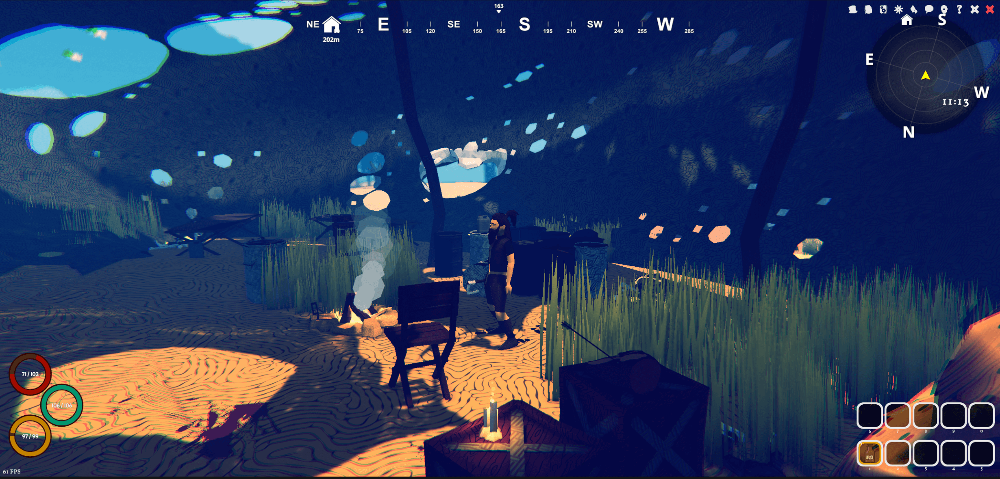
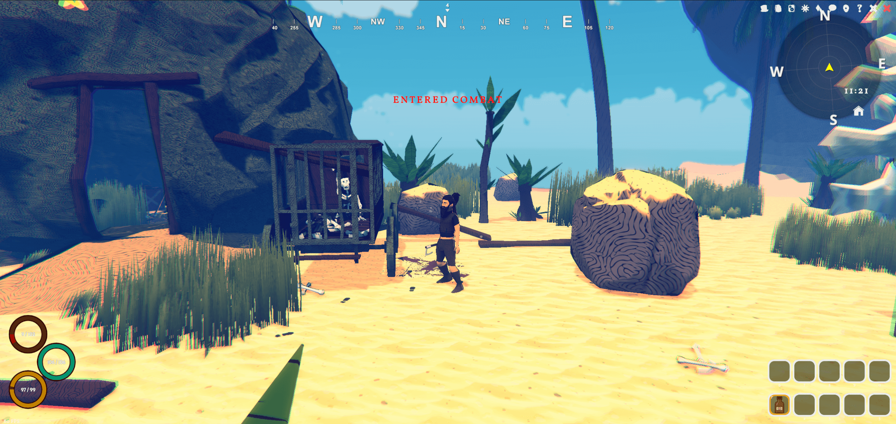
Nové aury na magicky ovlivněných itemech.
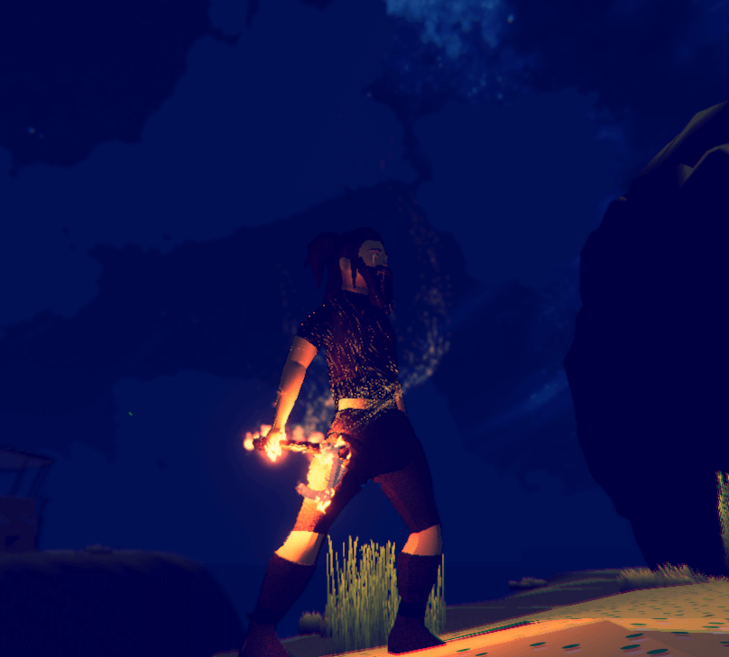
A ano, wandering shrine. Možná rychlejší způsob cestování po světě? Možná…
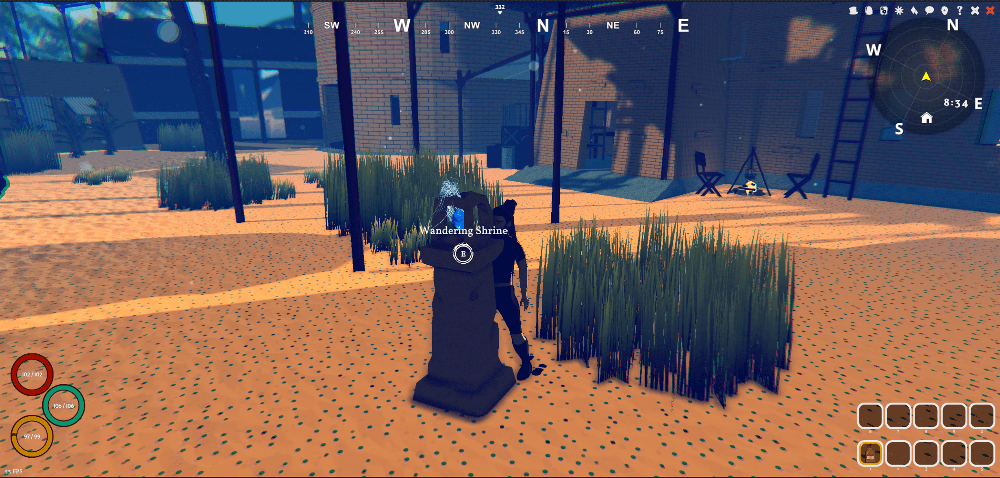
Magie je ve vzduchu
Kompletně jsem přepracoval magický systém. Hráči budou mít v inventáři šest socketů uspořádaných zleva doprava podle síly. Každý socket představuje slot pro kontejner anomálie, který může přidat nejen aktivní skill do talent tree, ale i bonusové staty nebo fungovat jako support gem.
Hráč bude omezený jen některými kombinacemi, jinak ale půjde míchat školy magie i anomálií poměrně volně. Některé anomálie budou čistě podpůrné, jiné dají dočasné buffy nebo kletby. Pro získání anomálií bude potřeba postupovat v profesi Anomalist, díky které půjde chytat silnější anomálie z náhodných eventů ve světě nebo z konkrétních dungeonů. A samozřejmě k tomu bude potřeba i vybavení, nádoby a další předměty.
Tady jsou vidět sloty pro anomálie.
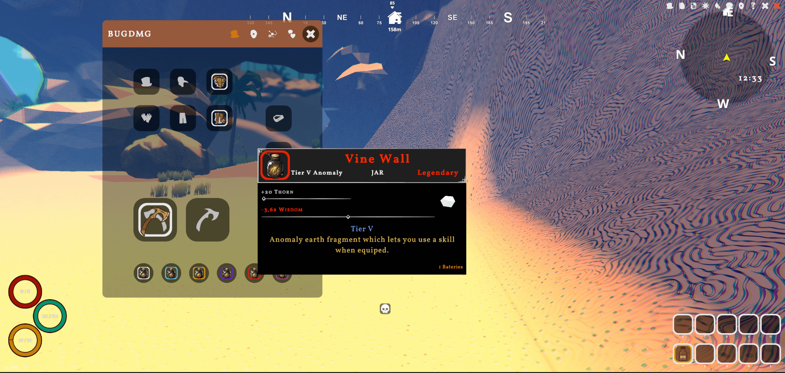
A tady je anomální event ve světě, který můžeš zkusit zachytit. Není to jednoduché.
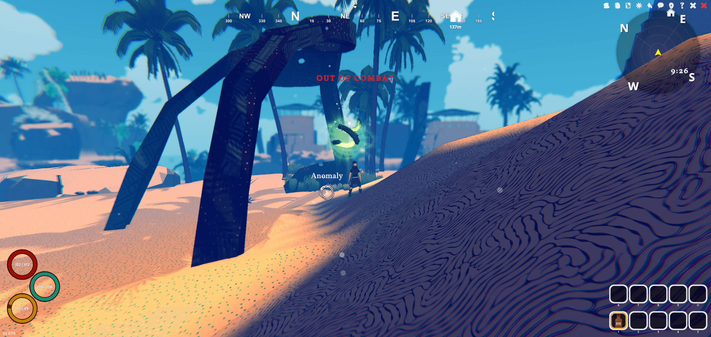
Minihry
Vytvořil jsem i několik minihier. Zatím jsou to hlavně proof of concept systémy, ale fungují. Můžu jimi zamykat dveře nebo truhly. Chci je navázat na profesi zloděje, aby měly ve hře reálný dopad. Sneak, stealing i lockpicking už jsou implementované, ale ještě nefungují úplně tak, jak bych chtěl, a nejsou nutné pro dokončení demo lokací.
Lockpicking minihra je zvuková i vizuální. Používá 2D sprite UI, kde hráč přesouvá zámky do náhodně generovaných pozic. U každého zámku můžu nastavit jinou obtížnost.
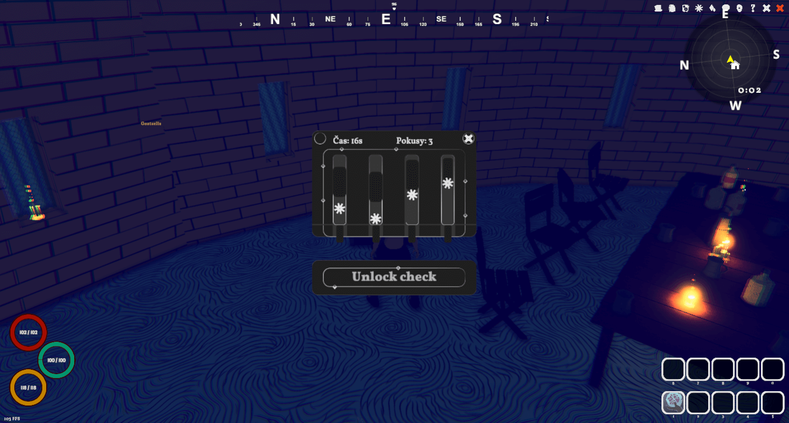
Merchant
Jedna z největších změn je nový obchodní systém. Popsat se dá jednoduše, ale programoval se pro mě dost těžce.
Když přijdeš k obchodníkovi, nenabídne ti celý svůj inventář, ale jen část. To motivuje chodit i do jiných měst. Každý obchodník má také vlastní týdenní ceny. Vyhodnocuje, které itemy od hráče chce vůbec vykoupit. Na každý odkupovaný item nastaví vlastní cenu, platnou jen pro daný týden. Celý systém je persistentní a nejde obejít reloadem. Resetuje se vždy po týdnu. Díky tomu působí obchodování živěji a strategičtěji.
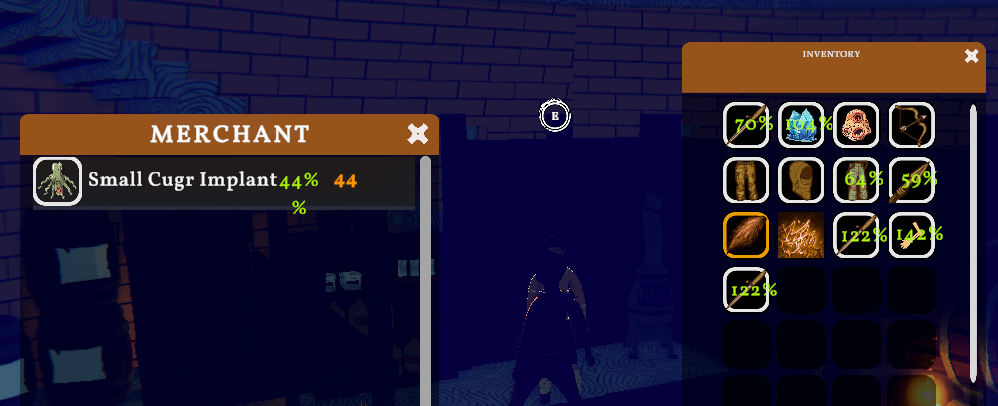
QoL
Spolu s novými obchodníky a item systémem jsem musel přidat i quality-of-life funkce jako splitování itemů, vybrání všeho nebo jednoduché řazení. Zatím na to ale nemám moc co ukázat.
Fulgurity
Další velký update jsou fulgurity a další perzistentní bonusy. Fulgurity fungují trochu jako map modifikátory z Path of Exile, ale v podobě elixírů. Hráč je craftí přes speciální profesi a potom je může vypít pro bonusy, případně i postihy, třeba k XP, goldu nebo jiným statům důležitým pro farmení a grind.
Tenhle systém se zároveň testuje i jako death penalty mechanika. Po smrti může hráč dostat trvalejší debuff, například -30 % XP a -30 % HP, který se odstraní až u shrine of revival a ještě za poplatek.
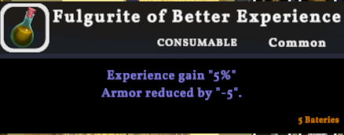
Shrine of revival.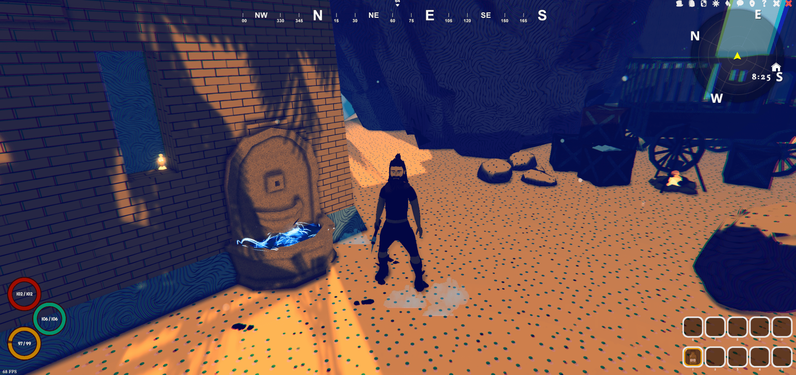
Runy a enchanty
Itemizace bývá jedna z nejkritizovanějších částí ARPG a je mi jasné, že ji ještě nemám dokonalou. Snažil jsem se ale spojit systémy, které mám nejradši.
Každý item může mít různé rarity: normal, magic, rare, epic, cursed, legendary, unique a další. Každý item může mít fixní bílé primární staty. Každý item může mít náhodné oranžové staty. Itemy můžou být enchantované přes crafting nebo přirozeně u unique kusů. Itemy můžou patřit do setů. Můžou mít náhodný počet socketů pro runy, gemy nebo další enhancementy. Runy a gemy půjde kombinovat do silných synergií a možná i nových itemů ve stylu Diablo 2. K tomu spousta menších detailů jako porovnání statů při equipu, ceny, 3D modely, ikonky, typy itemů nebo popisy. Do budoucna zvažuju i změnu fontu celé hry.
Když říkám „může mít“, neznamená to, že každý item bude mít všechno. Bílý předmět nikdy nebude působit jako unique. Velká část práce teď půjde do balancování. Chtěl bych ale, aby i obyčejné white, magic nebo rare itemy měly smysl a nekončily jen u prodeje, ale i u craftu, podobně jako třeba v Path of Exile.
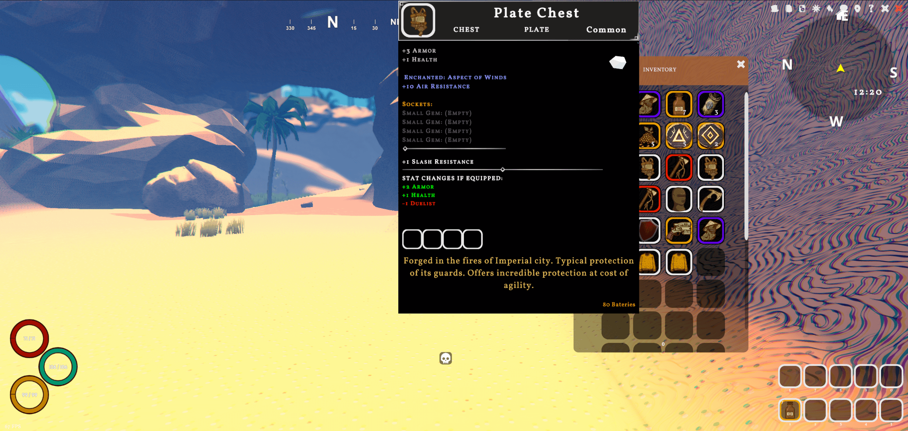
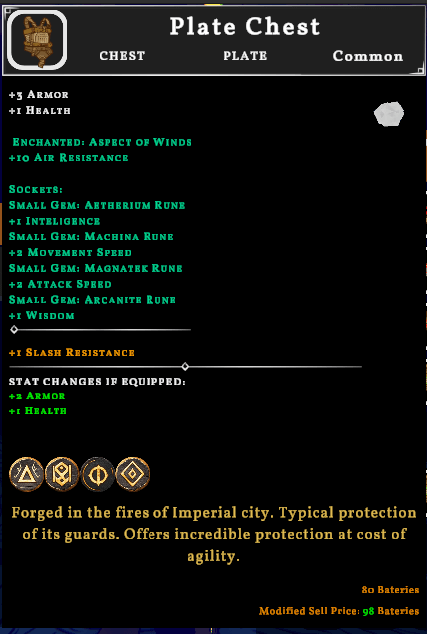
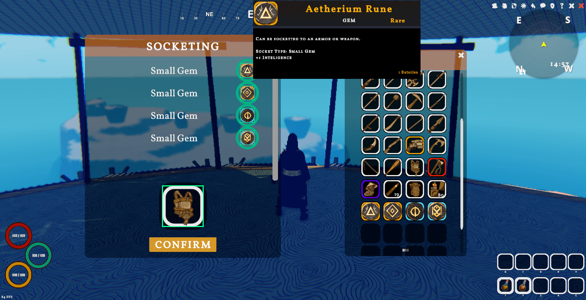
A to je pořád asi jen část…
Je tam ještě hromada dalších věcí. Nová hudba od Filipa, nové ragdolly pro zvířata, plugin na realističtější došlap nohou, nové frakce a jejich interakce, plně zavedený quest systém nebo persistentní peti s threat mechanikou, aby za hráče uměli tankovat.
Přibylo i obrovské množství nových 3D modelů, jak originálních, tak upravených ze Synty packů. A nejspíš jsem stejně na něco zapomněl. Je za tím půl roku poctivého vývoje.
Tentokrát nic neslibuju. Stejně bych to pak pravděpodobně nedodržel. Takže… zase někdy.
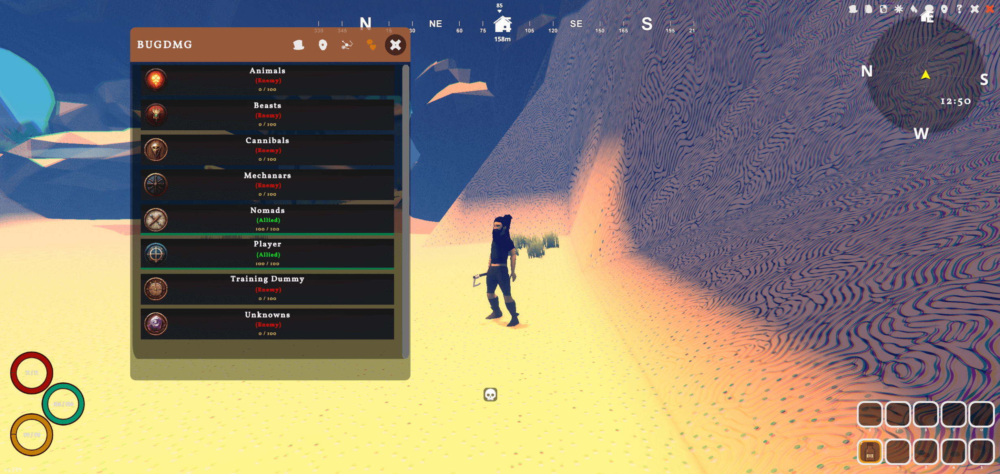